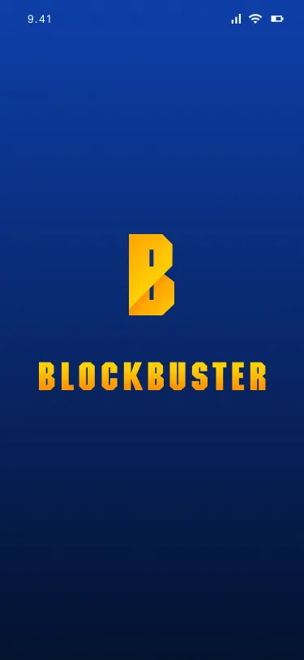
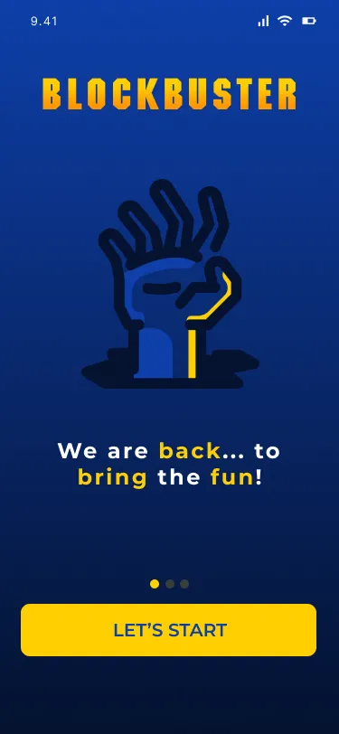
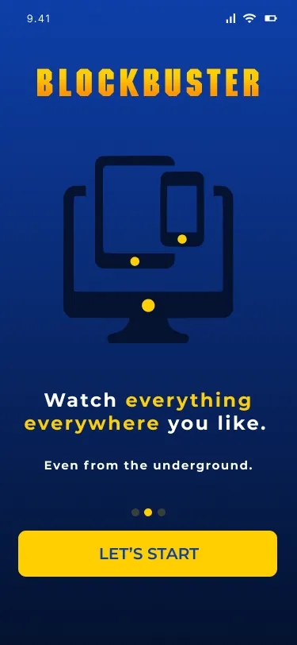
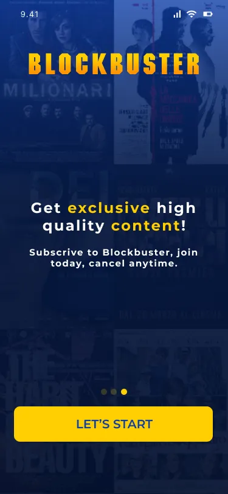
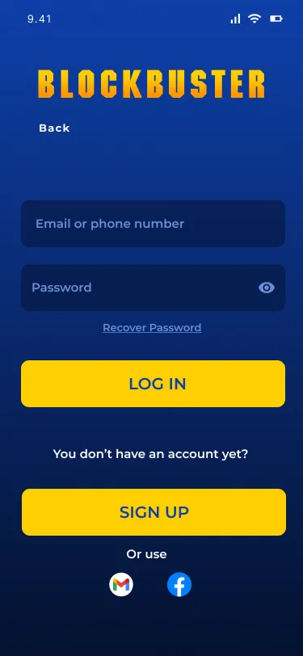
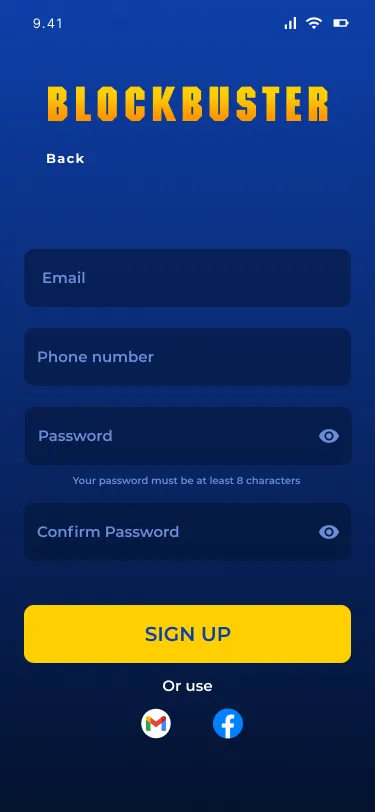
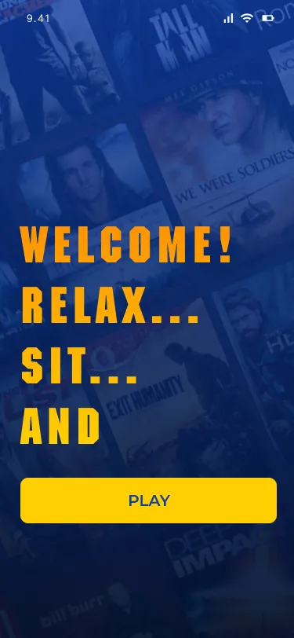
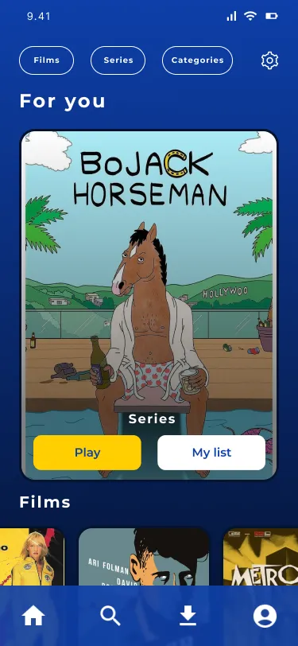

UX/UI DesignUX/UI Design
BlockbusterBlockbuster
What if Blockbuster came back — as a streaming platform? I prototyped the welcome experience in Figma: splash, onboarding, and the first screen of a resurrection. A UX/UI exercise built for a final exam, designed like a comeback.E se Blockbuster tornasse — come piattaforma streaming? Ho prototipato l'esperienza di benvenuto in Figma: splash, onboarding e la prima schermata di una resurrezione. Esercitazione UX/UI nata per un esame, pensata come un ritorno.